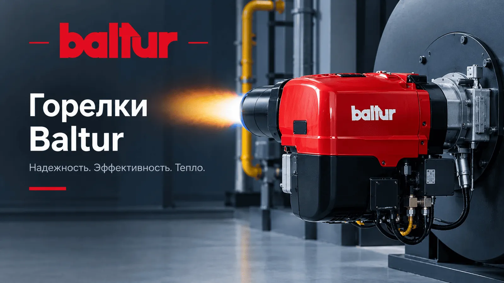

01 · частные дома
Сезонное ТО
- Один плановый выезд перед сезоном
- Чистка и настройка
- Протокол замеров
Работы выполняют инженеры с опытом от 10 лет. Цены — по запросу: назовите модель горелки по телефону, и мы сразу озвучим стоимость.

Монтаж на котёл, проверка газовой рампы или топливной линии, настройка ступеней и модуляции, замеры дымовых газов, акт и протокол.
Чистка головки сгорания, электродов, фотоэлемента и фильтров, замена форсунок, проверка клапанов, герметичности и автоматики.
Выезд при остановке котельной: поиск причины блокировки, ремонт автоматики, двигателя, насоса, сервопривода.
Подбор соотношения топливо–воздух по замерам O₂, CO и CO₂. В результате — устойчивое пламя и расход топлива без перерасхода.
Склад расходников и узлов в Ташкенте: электроды, форсунки, фотоэлементы, фильтры, блоки управления, сервоприводы.
Замена устаревшей горелки на актуальную серию Baltur, перевод котельной с дизеля или мазута на природный газ.
Внешне ровное пламя ещё не значит, что горелка работает экономично и безопасно.
| Параметр | «На слух» | По газоанализатору |
|---|---|---|
| Избыток воздуха | Не контролируется | Измеряется по O₂, подбирается под нагрузку |
| Угарный газ CO | Не виден | Измеряется на каждой ступени |
| Расход топлива | Часто завышен | Соответствует мощности котла |
| Документ | Нет | Протокол замеров |
Стоимость рассчитываем под количество и модели горелок — по запросу.
Назовите модель горелки и вид топлива — рассчитаем по телефону.
+998 98 210 03 03